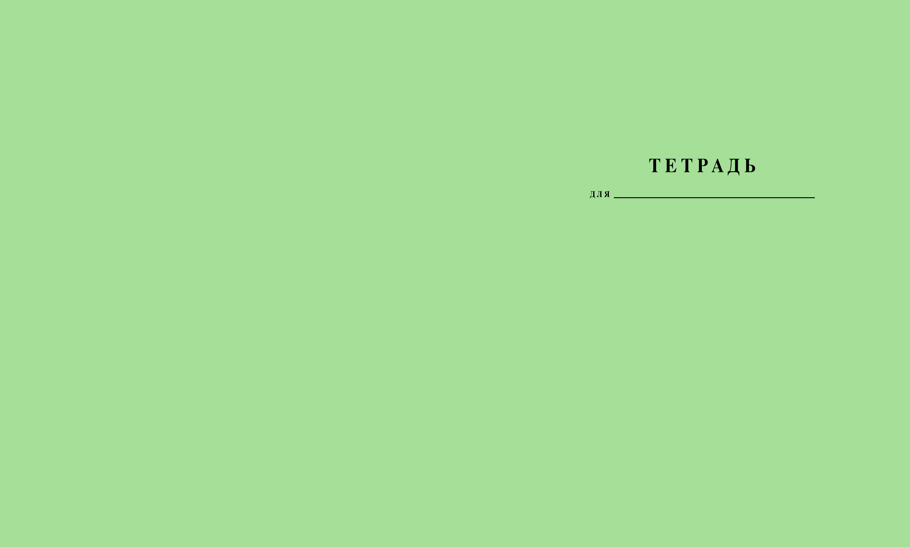

Open call на обложку
Каждое издание будет оформлено как знакомая со школы зеленая тетрадь в линейку, дополненное иллюстрациями/аппликациями.
Мы ищем художников, которые создадут обложки каждого выпуска. Чтобы принять участие, ознакомьтесь с темами тетрадей и присылайте свои варианты обложки на электронную почту.
В письме мы ждем два варианта изображения:
1. Вашу иллюстрацию/аппликацию/оформление на прозрачном фоне
2. Вашу иллюстрацию/аппликацию/оформление на зеленой обложке
обложка:
